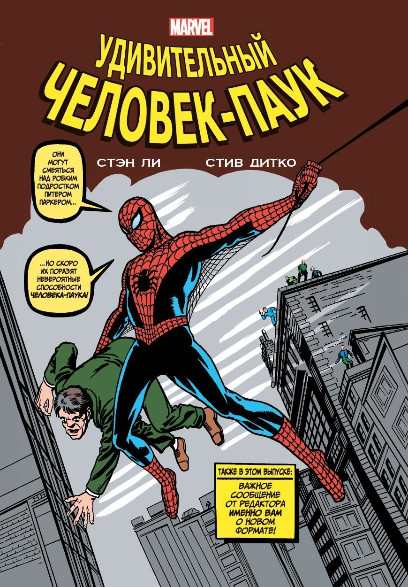

История супергеройских комиксов началась в июне 1938 года, когда Detective Comics (ныне DC Comics) выпустили первый номер Action Comics с дебютом Супермена. Его успех спровоцировал появление множества героев: Пластикмена, детектива Спирита, Капитана Америки, Бэтмена и Чудо-Женщины. Вторая мировая война сильно повлияла на сюжеты комиксов — герои боролись с нацистами. В послевоенные годы популярность получили персонажи, связанные с атомной энергией, что отражало страхи и надежды общества.
В 1960–1970-х появились графические новеллы — более сложные и взрослые произведения. В 1970-х изменилась система продаж: комиксы стали распространяться через специализированные магазины, что изменило восприятие фанатов.
DC Comics, основанное в 1934 году, заложило основы супергеройского жанра с Суперменом и Бэтменом. Marvel, появившаяся в 1938 году (ранее Timely Comics), сделала ставку на реалистичных героев, наделённых человеческими слабостями.  В 1960-е DC объединили своих героев в Лигу справедливости, а Marvel ответила созданием Фантастической четвёрки. Стэн Ли изменил подход: его персонажи сталкивались с реальными проблемами, а сам он активно взаимодействовал с фанатами. В 1986 году DC перезапустили свои серии, адаптируя их к новой аудитории, а оба издательства начали активно покорять телевидение и кино.
Это текст параграфа. Он обычного размера.